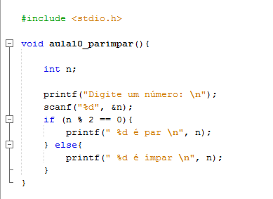
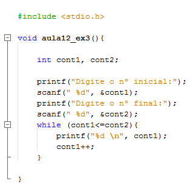
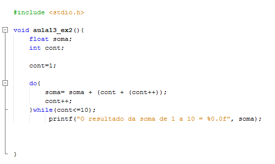
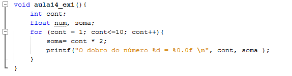

Algoritmo e Lógica de Programação
Quem ministra as aulas de Algoritmo e lógica de programação é a Profª. Dra. Lígia Rodrigues Prete, possui graduação em Processamento de dados pela Universidade Paulista(1999),Pós-Graduação Lato Sensu em Informática na área de concentração em Desenvolvimento de Sistemas sob a Tecnologia Cliente/Servidor e Internet pelo Centro Universitário de Rio Preto (2001). Licenciatura Plena em Informática pelo Programa Especial de Formação Pedagógica de Docentes para as Disciplinas do Currículo da Educação Profissional de Nível Médio do Centro Estadual de Educação Tecnológica Paula Souza (2008).
Manzano(2009)disse: "Algoritmos são conjunto de passos finitos e organizados que, quando executados,resolvem determinado problema".
Na área tecnologica é muito utilizada, através deles e da lógica de programação, é possível desenvolver sistemas dos mais diversos tipos.
Estrutura Condicional IF...ElSE
A instrução IF em sua forma básica só testa uma condição. Na maioria das vezes gostaríamos de poder escolher as instruções a serem executadas em caso do não cumprimento da condição
A expressão IF ... ELSE permite que o programador possa oferecer a quem usa o software uma oção alternativa, caso não ocorra o cumprimento de uma comdição. A sintaxe desta expressão é a seguinte:
Estrutura de Repetição WHILE
A instrução while representa outro meio de executar várias vezes a mesma série de instruções. A sintaxe desta expressão é a seguinte:
Esta instrução executa a lista de instruções enquanto (significado da palavra While) a condição se realiza.
Como a condição de saída pode ser qualquer estrutura condicional, o risco de loop infinito (loop cuja condição é sempre verdadeira) é grande, ou seja, pode causar uma falha do programa em curso de execução.
Estrutura de Repetição DO...WHILE
Do/While – O do/while tem quase o mesmo funcionamento que o while, a diferença é que com o uso dele teremos os comandos executados ao menos uma única vez.Veja abaixo a sintaxe do do/while:
Estrutura de Repetição FOR
A instrução for executa várias vezes a mesma série de instruções: é um loop. Em sua sintaxe, basta especificar o nome da variável que serve de contador (e, eventualmente, o seu valor inicial, a condição sobre a variável para a qual o loop para (basicamente uma condição que testa se o valor do contador excede um limite) e, finalmente, uma instrução que incrementa (ou decrementa) o contador. A sintaxe desta expressão é a seguinte:
